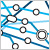

如果您没有阅读过本系列文章的 第 1 部分， 那么您可能希望在继续阅读本文之前先阅读那篇文章。
不作为 root 用户来构建 RPM 包
正如您在第 1 部分中看到的那样，构建 RPM 软件包通常要求您以 root 用户登录。 其原因如下：
- RPM 在打包过程中安装软件，并且通常只有 root 用户可以写到安装目录中。
- RPM 需要读写 /usr/src/redhat（一般用户不能修改它）下的目录。
我们在 第 1 部分中探讨了通过用 RPM 构建根（build root）来解决第一个问题。
要解决第二个问题，可以通过更改
%_topdir 设置来告诉 RPM 查找和创建不同目录集中的文件。按照下面的方法在您的主目录下创建一个名为 .rpmmacros的文件：
%_topdir /home/your_userid/rpm
这个文件会告诉 RPM：它先前在 /usr/src/redhat 下查找的所有目录应该改为在 /home/your_userid/rpm 下查找。 现在，您应该创建这样一个完整的目录树：~/rpm ~/rpm/SOURCES ~/rpm/SPECS ~/rpm/BUILD ~/rpm/RPMS ~/rpm/RPMS/i386 ~/rpm/SRPMS
~/rpm
~/rpm/SOURCES
~/rpm/SPECS
~/rpm/BUILD
~/rpm/RPMS
~/rpm/RPMS/i386
~/rpm/SRPMS
（如果愿意，可以通过在 RPM 中重新定义其它宏，来将其中任何目录放在您想放的任何地方。您可能需要考虑更改的一些宏包括
%_sourcedir 、
%_specdir 、
%_srcrpmdir 、
%_builddir 和
%_rpmdir 。 有关这些宏的缺省值，请查看 /usr/lib/rpm/macros。 对于这个示例，我们仅仅将它们都放在 ~/rpm 下。）
现在，将
indent-2.2.6.tar.gz 文件（请参阅本文后面的
参考资料）复制到 ~/rpm/SOURCES，这里
没有以 root 用户登录，运行
rpm -ba indent-2.spec （这些文件就是
第 1 部分中的那些文件）。RPM 将 把
indent 构建在 ~/rpm/BUILD 目录下，并将二进制的 RPM 包放在 ~/rpm/RPMS/i386 中，将源代码包放在 ~/rpm/SRPMS 中。
与之相对照，在没有构建根的情况下，尝试使用 spec 文件
indent-1.spec 。RPM 在尝试将
indent 安装到 /usr/local/bin 中时会失败。
告诫
使用构建根和设置 RPM 的
i%_topdir 使您能在不作为 root 运行的情况下构建许多软件包，但这并不总是很容易。
首先，一些包并不象
indent 那样可以容易地安装到构建根目录中。对于那些任何未用 GNU autoconf 来开发的包，您必须要仔细查看一下，看是否有一种方法，可以将包安装到另一个目录中， 这也许可以修改 Makefile 来强制这样做。 在下一部分中，我将向您演示如何使用 RPM 来构建已修改的程序。
其次，只有相当少部分包将在其正常安装期间试图做一些只有 root 用户才可以做的事情，如：
- 创建特殊文件（管道、设备文件等等）
- 修改系统配置文件`
您必须逐个处理这些问题。通常，您可以在 post-install 脚本（在安装 RPM 之后运行的脚本）中做一些必要工作。 我将在以后的文章中讨论它们，但简而言之，可以将“%post”节添加到 spec 文件中， 并在该节中放置一些 Linux 命令，以便在安装 RPM 之后运行这些命令。
给软件打补丁
假设您有一些要打成 RPM 包的软件， 但如果不对它做一些更改，就不能在 Linux 上构建它。 然而，您又没有拥有该软件，所以不能正式地更改它。
您所需要做的就是对该软件的正式版本进行 打补丁或做一些修改。 但是，对其他人的软件进行修改，然后再分发此修改过的版本通常被认为是不礼貌的，所以您希望您自己所做的更改对别人来说也是可用的。 这样，使用您的包的任何人都可以看到您做了哪些事情以及确定您所做的更改是否是可接受的。
这是常有的事，而且 RPM 也提供一些帮助。 您可以建立一个 RPM 包，以便二进制 RPM 文件包含您对程序所做的修改，并且源 RPM 不仅包含原始的源代码， 而且还包含您所做的更改以及有关如何应用和构建这些更改的所有详细信息。
这些步骤如下：
- 断定对源代码做哪些更改就可使软件工作。
- 创建一个 补丁文件来捕获您所做的更改。
- 将该补丁添加到 RPM spec 文件。
第 1 步. 断定要对源代码做哪些更改
通常，要做的第一件事是，在没有 RPM 的情况下编译并运行软件。明了必须要更改的那些文件。 如果有必要，可创建一些新文件或除去与原始源代码一起交付的一些文件。
对于这个示例，我将代码抽取到目录 indent-2.2.6-working 中。我修改了 indent.c， 以便在程序启动时打印一条表示友好的消息，然后验证该程序是否仍可以构建以及该程序是否仍能工作。
第 2 步. 创建补丁文件来捕获您所做的更改
现在，您希望创建一个仅捕获您所做更改的补丁文件。 这里有一种可以实现这的方法。虽然这有点儿乏味，但能够确保您捕获所有更改。
- 将软件完全抽取到一个新目录中，然后复制您已对其做过更改的文件，使其覆盖刚抽取出的那些文件。 这样，在本来应该在您先前构建和测试软件时创建的目录中就不会有任何多余的文件。 类似地，复制您创建的任何新文件，并删除任何您先前删除过的文件。
对于这个示例，我已完全抽取到目录 indent-2.2.6-my，并覆盖文件 indent.c。
- 再一次将软件抽取到另一个目录。这样就提供了一个原始软件的副本来与您的软件进行比较。对于这个示例，我是将软件抽取到 indent-2.2.6 目录。
现在，已有三个目录：
- indent-2.2.6-working
- 工作目录
- indent-2.2.6-my
- 经过更改的软件，其中含有我所做的更改
- indent-2.2.6
- 未更改的软件
- 从这三个目录的父目录中用类似于以下的命令生成补丁文件：
diff -uNr indent-2.2.6 indent-2.2.6-my >indent-2.2.6.patch
注意，使用
diff 时运用了选项
-uNr 。
-u 以
统一格式创建补丁文件，这种格式比缺省格式更紧凑些。
-N 确保补丁文件将正确地处理已经创建或删除文件的情况。
-r 比较命令行上所给出的两个目录的所有子目录中的所有文件。
另外还要注意：只要您完全按上述来做，这些目录名是无关紧要的。 补丁文件中将有这些目录名，但我们将通知补丁程序忽略它们。
现在，检查一下补丁文件 indent-2.2.6.patch。下面是我的示例：
清单 1. indent-2.2.6.patch
diff -uNr indent-2.2.6/indent.c indent-2.2.6-my/indent.c
--- indent-2.2.6/indent.c Thu Nov 16 22:01:04 2000
+++ indent-2.2.6-my/indent.c Wed Sep 26 14:33:11 2001
@@ -1864,6 +1864,8 @@
int using_stdin = false;
enum exit_values exit_status;
+ printf("Hello from Dan
");
+
#ifdef _WIN32
/* wildcard expansion of commandline arguments, see wildexp.c */
extern void wildexp (int *argc, char ***argv);有时候，您会注意到
diff 检查出了您无意要做的更改。 这时，您可能需要回过去，清除您的代码并再次生成补丁，直到获得一个干净的、令您满意的补丁文件为止。
一旦按您所希望的那种方式完成补丁之后，最好添加注释以说明您所做的更改。 在不损害任何内容的情况下，在补丁文件的开始处或结束处添加文本。
清单 2. 带注释的 indent-2.2.6.patch
Dan Poirier - 2001-09-26 - added a friendly greeting as indent starts.
This is just an example.
diff -uNr indent-2.2.6/indent.c indent-2.2.6-my/indent.c
--- indent-2.2.6/indent.c Thu Nov 16 22:01:04 2000
+++ indent-2.2.6-my/indent.c Wed Sep 26 14:33:11 2001
@@ -1864,6 +1864,8 @@
int using_stdin = false;
enum exit_values exit_status;
+ printf("Hello from Dan
");
+
#ifdef _WIN32
/* wildcard expansion of commandline arguments, see wildexp.c */
extern void wildexp (int *argc, char ***argv);第 3 步. 将该补丁添加到 RPM spec 文件中
现在，该让 RPM 使用您的补丁了。将该补丁文件复制到您的 SOURCES 目录（如果您遵循了先前的建议，则或许是 ~/rpm/SOURCES），然后对 spec 文件做下列更改：
清单 3. indent-3.spec：使用 indent-2.2.6.patch
Summary: GNU indent
Name: indent
Version: 2.2.6
Release: 3
Source0: %{name}-%{version}.tar.gz
Patch0: %{name}-2.2.6.patch
License: GPL
Group: Development/Tools
BuildRoot: %{_builddir}/%{name}-root
%description
The GNU indent program reformats C code to any of a variety of
formatting standards, or you can define your own.
%prep
%setup -q
%patch -p1
%build
./configure
make
%install
rm -rf $RPM_BUILD_ROOT
make DESTDIR=$RPM_BUILD_ROOT install
%clean
rm -rf $RPM_BUILD_ROOT
%files
%defattr(-,root,root)
/usr/local/bin/indent
%doc /usr/local/info/indent.info
%doc %attr(0444,root,root) /usr/local/man/man1/indent.1
%doc COPYING AUTHORS README NEWS现在，用
rpm -ba indent-3.spec 命令构建您的包。 如果您密切关注构建过程的话，会看到在构建期间 RPM 应用了您的补丁。
%Patch0: %{name}-2.2.6.patch 这一行告诉 RPM 第一个补丁文件名。 如果有必要，可以添加
%Patch1 、
%Patch2 等。
在
%prep 部分中的
%patch -p1 行是一个 RPM 宏， 它将在您系统的构建目录中运行补丁程序，其中把第一个补丁文件作为输入。 需要将
-p1 传递给补丁程序，告诉它从补丁文件中的路径中剥去一层目录，因为该补丁文件包含
indent-2.2.6 目录名，而 RPM 将在该目录内运行该补丁文件。
通过示例学习
既然，您理解了有关如何构建 RPM 包的基础知识，则可以通过研究一些示例来学习更多的知识。 最好的源代码示例之一是您自己的 Linux 分发版。例如，RedHat 带有包含源 RPM 包的整张 CD。 以下是如何使用它们。
源 RPM 包包含：
- 一个 .spec 文件
- 一个或多个源文件
- 所有使用过的补丁文件
与安装二进制 RPM 包类似，可以使用
rpm -i filename.rpm 安装源 RPM 包。 安装完之后，.spec 文件将在您的 %_specdir 目录中，源文件和补丁文件将在您的 %_sourcedir 目录中。 如果创建了上面描述的 .rpmmacros 文件，那么这些目录为 ~/rpm/SPECS 和 ~/rpm/SOURCES。
现在，可以读取 Red Hat 自己分发的这些包的 .spec 文件。 可以尝试用
rpm -ba foo.spec 构建这些 .spec 文件，并观察所发生的事情，以及摆弄 spec 文件以尝试一些新的事物。
对于 GNU indent 程序，一个好的方法是从 Red Hat 的源 RPM 包开始。看一下您是否可以想出为什么它们的 .spec 文件不同于本文中的 .spec 文件。
二进制 RPM 包的可移植性
不幸的是，二进制 RPM 包在可移植性方面不是很好。多数情况下，构建在某个 Linux 分发版上的 RPM 不能应用到另一个 Linux 分发版。 更不要说应用到同一个分发版的另一个版本上！
原因有很多，包括基本内核版本、库版本和目录结构方面的差异。
这很不幸，但象 Linux Standard Base（请参阅 参考资料）这样的组织正在尝试达到分发版之间的一致， 以解决难以移植的问题。也许有一天，构建在一个主流 Linux 分发版上的任何 RPM 都可以安装和运行在相同的处理器之上的任何 其它主流 Linux 分发版上。
至于现在，您应该做好计划，有多少个 RPM 将要在其上运行的分发版，就可能构建有多少个 RPM，或者寻找志愿者来为您完成这件事。
分发您的工作结果：tar 文件和源 RPM 包
为了使其他人在尽可能多的分发版上构建您的软件，就要使 .spec 文件和补丁文件成为可用的文件。
如果有必要，最好的方法是直接更改软件，所以该方法将在 Linux 上进行构建，并将 .spec 文件包含在分发版中。 如果 .spec 文件在带有源码的 tar 压缩包（.tar.gz 文件）中，那么用户只需运行：
rpm -tb foo.tar.gz
并构建该包的二进制 RPM ― 甚至无需解压该 tar 文件!
如果无法使 .spec 文件包含在软件中，则可以分发一个源 RPM 包。 有了这，用户就可以运行：
rpm --rebuild foo.src.rpm
并在他们的系统上构建二进制 RPM。
参考资料
- 您可以参阅本文在 developerWorks 全球站点上的 英文原文.
- 本系列的先前文章介绍了用 RPM 构建软件包的过程。
- 本文中描述的文件源代码：
- RPM 网站上有指向许多有用资源的链接。RPM 电子邮件列表是提问题的好地方。
- Maximum RPM是一本关于使用 RPM 的书。它相当过时了，但现在正处在更新中。
- RPM HOWTO也正变得有些过时了。它讲述了一些和本文一样的知识范围。
- Eric S. Raymond 的 Software Release Practice HOWTO 文档并不是专门针对 RPM 或 Linux。但它在如何发布软件以方便用户使用和方便程序员提供补丁和完善方面，有很多好的技巧。
- 请阅读 Linux Standard Base（LSB），它的目的是要“开发和提倡一组标准， 以增加 Linux 分发版之间的兼容性并使软件应用程序能够运行在任何兼容的 Linux 系统上。”
- 自由软件基金会（The Free Software Foundation）是一个提供 GNU Indent 和许多其它有用软件包的组织。
- 请在 developerWorks上浏览 更多 Linux 参考资料。
- 请在 developerWorks上浏览 更多开放源码参考资料。
条评论
在检索评论时出错，请稍后刷新。 |

IBM PureSystems
IBM PureSystems™ 系列解决方案是一个专家集成系统
- 
developerWorks 学习路线图
通过学习路线图系统掌握软件开发技能

软件下载资源中心
软件下载、试用版及云计算
请 登录 或 注册 后发表评论。
注意：评论中不支持 HTML 语法